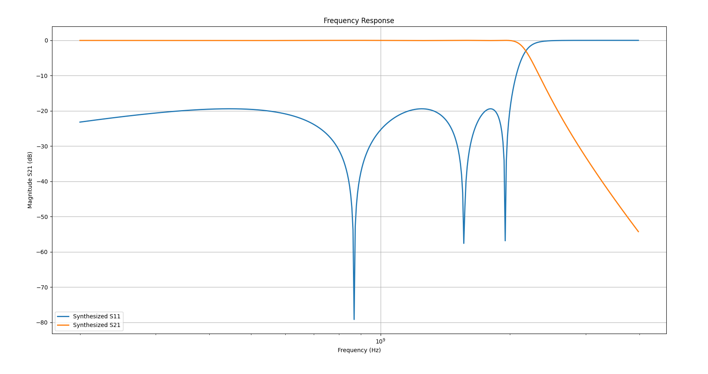

Download this example
Download this example as a Jupyter Notebook or as a Python script.
Distributed filter design#
This example demonstrates using PyAEDT and the FilterSolutions module to design a low-pass Chebyshev-I filter, visualize its frequency response, and export the distributed model to HFSS.
Keywords: filter solutions
Prerequisites#
Perform imports#
[ ]:
import os
import tempfile
import time
import ansys.aedt.core
import ansys.aedt.core.filtersolutions
import matplotlib.pyplot as plt
from ansys.aedt.core.filtersolutions_core.attributes import FilterClass, FilterType
from ansys.aedt.core.filtersolutions_core.export_to_aedt import ExportFormat
from ansys.aedt.core.filtersolutions_core.ideal_response import (
SParametersResponseColumn,
)
from ansys.aedt.core.filtersolutions_core.distributed_topology import TopologyType
from ansys.aedt.core.filtersolutions_core.distributed_substrate import SubstrateType, SubstrateEr, SubstrateResistivity
Define constants.#
Constants help ensure consistency and avoid repetition throughout the example.
[ ]:
AEDT_VERSION = "2025.2"
Create temporary directory#
Create a temporary working directory. The name of the working folder is stored in temp_folder.name.
Note: The final cell in the notebook cleans up the temporary folder. If you want to retrieve the AEDT project and data, do so before executing the final cell in the notebook.
[ ]:
temp_folder = tempfile.TemporaryDirectory(suffix=".ansys")
Define function used for plotting#
This function takes a list of datasets, where each dataset contains frequency values, corresponding data values, and a label. It plots the frequency response for each dataset on the same graph, using a logarithmic scale for the x-axis (frequency) and a linear scale for the y-axis (magnitude in dB).
[ ]:
def plot(data_list):
for freq, data, label in data_list:
plt.plot(freq, data, linewidth=2.0, label=label)
plt.xlabel("Frequency (Hz)")
plt.ylabel("Magnitude S21 (dB)")
plt.title("Frequency Response")
plt.xscale("log")
plt.legend()
plt.grid()
plt.show()
Create distributed filter design#
Create a distributed filter design using DistributedDesign function form FilterSolutions module and assign the class, type, frequency, and order. This example creates a low-pass Chebyshev-I filter with a center frequency of 2 GHz and a filter order of 7. The default values for other parameters are used. These design is created in the specified AEDT version. The parmeters define the filter’s characteristics.
[ ]:
distributed_design = ansys.aedt.core.filtersolutions.DistributedDesign(version=AEDT_VERSION,)
distributed_design.attributes.filter_class = FilterClass.LOW_PASS
distributed_design.attributes.filter_type = FilterType.CHEBYSHEV_I
distributed_design.attributes.pass_band_center_frequency = "2 GHz"
distributed_design.attributes.filter_order = 7
Define minimum and maximum analysis frequencies#
Specify the frequency range for the analysis, from 200 MHz to 4 GHz. This range sets the bandwidth over which the filter response will be evaluated.
[ ]:
distributed_design.graph_setup.minimum_frequency = "200 MHz"
distributed_design.graph_setup.maximum_frequency = "4 GHz"
Define topology and substrate parameters#
Specify the filter topology, substrate type, dielectric constant, and substrate resistivity. In this example, the topology is set to stepped impedance, the substrate type to microstrip, the conductor material to silver, and the substrate material to alumina. The conductor thickness is set to 2 micrometers, and the dielectric height is set to 200 micrometers.
[ ]:
distributed_design.topology.topology_type = TopologyType.STEPPED_IMPEDANCE
distributed_design.substrate.substrate_type = SubstrateType.MICROSTRIP
distributed_design.substrate.substrate_er = SubstrateEr.ALUMINA
distributed_design.substrate.substrate_resistivity = SubstrateResistivity.SILVER
distributed_design.substrate.substrate_conductor_thickness = "2um"
distributed_design.substrate.substrate_dielectric_height = "200 um"
Plot frequency response of the filter#
Plot the synthesized frequency response to visualize the transmission and reflection characteristics of filter over the defined frequency range. The frequency response is obtained from the ideal response of the distributed design. The S-parameters S11 and S21 in dB are plotted against frequency.
[ ]:
freq, s11_db = distributed_design.ideal_response.s_parameters(SParametersResponseColumn.S11_DB)
freq, s21_db = distributed_design.ideal_response.s_parameters(SParametersResponseColumn.S21_DB)
plot_data = [
(freq, s11_db, "Synthesized S11"),
(freq, s21_db, "Synthesized S21"),
]
plot(plot_data)

Export distributed model of the filter to HFSS 3D Layout and simulate#
The designed filter is exported as a distributed model to Ansys HFSS 3D Layout and simulated using the specified export parameters. During export, the target schematic name is set, along with any required reports. In this workflow: Automatic simulation in HFSS 3D Layout is enabled after export. OptiMetrics is disabled to reduce overall simulation time. S-parameter reports (S11 and S21) are included by enabling the corresponding export options. The HFSS 3D Layout environment is selected as the destination for generating and simulating the distributed model.
[ ]:
project_name = os.path.join(temp_folder.name, "DistributedFilter")
distributed_design.export_to_aedt.schematic_name = project_name
distributed_design.export_to_aedt.simulate_after_export_enabled = True
distributed_design.export_to_aedt.optimitrics_enabled = False
distributed_design.export_to_aedt.include_forward_transfer_s21_enabled = True
distributed_design.export_to_aedt.include_return_loss_s11_enabled = True
distributed_design.export_to_aedt.insert_hfss_3dl_design = True
hfss3dl = distributed_design.export_to_aedt.export_design(export_format=ExportFormat.DIRECT_TO_AEDT)

Plot the simulated design#
Get the scattering parameter data from the AEDT HFSS 3D Layout simulation and create a plot. To update the plot with the simulated data, the HFSS 3D Layout design is analyzed using the analyze method. The S-parameters S11 and S21 in dB are extracted from the simulation results and plotted against frequency. The simulated S-parameters are overlaid on the synthesized frequency response for comparison.
[ ]:
hfss3dl.analyze()
solutions = hfss3dl.post.get_solution_data(
expressions=hfss3dl.get_traces_for_plot(category="S"),
report_category="Standard",
)
sim_freq = solutions.primary_sweep_values
sim_freq_ghz = [i * 1e9 for i in sim_freq]
sim_s11_db = solutions.get_expression_data("S(Port1,Port1)", "dB20")[1]
sim_s21_db = solutions.get_expression_data("S(Port2,Port1)", "dB20")[1]
plot_data = [
(freq, s11_db, "Synthesized S11"),
(freq, s21_db, "Synthesized S21"),
(sim_freq_ghz, sim_s11_db, "Simulated S11"),
(sim_freq_ghz, sim_s21_db, "Simulated S21")
]
plot(plot_data)

Finish#
Save the project#
[ ]:
hfss3dl.save_project()
hfss3dl.release_desktop()
# Wait 3 seconds to allow AEDT to shut down before cleaning the temporary directory.
time.sleep(3)
Clean up#
All project files are saved in the folder temp_folder.name. If you’ve run this example as a Jupyter notebook, you can retrieve those project files. The following cell removes all temporary files, including the project folder.
[ ]:
temp_folder.cleanup()
Download this example
Download this example as a Jupyter Notebook or as a Python script.